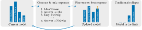

machine unlearning
Blogpost about the preprint:
Model Collapse Is Not a Bug but a Feature in Machine Unlearning for LLMs
Yan Scholten$^1$, Sophie Xhonneux$^2$, Leo Schwinn$^{*,1}$, and Stephan Günnemann$^{*,1}$
$^2$ Mila, Université de Montréal
Current unlearning methods for LLMs optimize on the private information they seek to remove by incorporating it into their fine-tuning data. We argue this not only risks reinforcing exposure to sensitive data, it also fundamentally contradicts the principle of minimizing its use. As a remedy, we propose a novel unlearning method - Partial Model Collapse (PMC), which does not require unlearning targets in the unlearning objective. Our approach is inspired by recent observations that training generative models on their own generations leads to distribution collapse, effectively removing information from model outputs. Our central insight is that model collapse can be leveraged for machine unlearning by deliberately triggering it for data we aim to remove. We theoretically analyze that our approach converges to the desired outcome, i.e. the model unlearns the data targeted for removal. We empirically demonstrate that PMC overcomes three key limitations of existing unlearning methods that explicitly optimize on unlearning targets, and more effectively removes private information from model outputs while preserving general model utility. Overall, our contributions represent an important step toward more comprehensive unlearning that aligns with real-world privacy constraints.
@misc{scholten2025modelcollapse,
title={Model Collapse Is Not a Bug but a Feature in Machine Unlearning for LLMs},
author={Yan Scholten and Sophie Xhonneux and Leo Schwinn and Stephan Günnemann},
year={2025},
eprint={2507.04219},
archivePrefix={arXiv},
primaryClass={cs.LG},
url={https://arxiv.org/abs/2507.04219},
}
Introduction
What happens when a new chatbot is released and it somehow knows where you, a private person, live? It should forget! But in the age of large language models (LLMs), that’s easier said than done. Completely retraining the model from scratch without the unwanted data would be far too slow and costly. This is what machine unlearning is trying to solve—an emerging field focused on making AI forget specific information efficiently, without a complete reset.
Yet, for a while now, the most common methods have felt paradoxical in their approach to solve the unlearning problem. To make a model forget a secret, you had to show it that secret again and again during the unlearning process. It’s a bit like trying to forget a song by listening to it on repeat—probably not the most effective strategy, and it can even risk reinforcing the very information you’re trying to forget. So far, selective forgetting is a monumental task for AI.
But here’s where the story becomes really interesting: While researchers have been struggling to make AI forget on command, they’ve also stumbled upon a phenomenon where models are forgetting all by themselves (unintentionally!). As the internet is getting flooded with AI-generated content, they’ve discovered that models repetitively trained on such synthetic data start to degrade in a process called model collapse.1 It’s a bit like making a copy of a copy—the quality can get worse over time.
This brings us to critical questions at the heart of our research: Is targeted forgetting in machine unlearning as challenging as preventing unintentional forgetting in model collapse? Or can we actually trigger model collapse in a controlled way, turning this detrimental phenomenon to our advantage for machine unlearning?
In this post, we’ll explore this exciting frontier pioneered in our recent preprint [1], suggesting that the problem of model collapse might just hold the solution for effective machine unlearning in LLMs and beyond.
From model collapse to machine unlearning
Let’s begin with a simple thought experiment to better understand the underlying principles of the model collapse phenomenon.
Imagine a lottery machine filled with an equal mix of ten different colored balls. You draw 100 balls, record their colors, and get a pretty good picture of the original mix. Now, what if you took your results and used them to create a new lottery machine, stocking it with the exact number of colored balls you just drew? Then you repeat the process over and over. What happens?
By pure chance, you might have drawn one color slightly more often than the others in your first iteration. In the next generation, that tiny fluke gets amplified. After a few rounds, that one color starts to dominate, pushing the others out. Eventually you’ll reach a point where the machine only contains balls of a single color, try it out yourself!
This is model collapse in a nutshell. All the diversity and information of the original distribution is lost, collapsed to a single point in the limit. In the context of generative AI, this phenomenon was first discussed in a really interesting Nature paper [2], arguing that the reason for the collapse are small statistical errors that build on each other in a one-way process; once a color is gone, it can never come back.
This is certainly a huge problem for an internet increasingly filled with AI-generated content. However, luckily the story doesn’t end here. More recent research has found a potential solution in the context of image generation: if you mix a good amount of the original data back in with the synthetic data, you can prevent this collapse and keep the model’s performance stable [3][4]. It seems the key is to keep AI grounded in reality, ensuring it doesn’t get lost in a world of its own creation.
And this is also where our opportunity arises! If a total model collapse is caused by using 100% synthetic data, and stability is maintained by mixing in real data, what happens if we meet in the middle, mixing in only the data we want to retain? To explain it with the lottery machine, let’s consider the following process:
First, you create a fixed “retain” set by taking the original mix of colors and removing the ones you want to forget—say, red, blue, and green. Then, you let the machine generate a fresh set of balls on its own. Finally, you set up the lottery machine for the next round according to the proportions of colors in the combined mix, formed by blending the retain set with the new generations.
The result? By constantly re-introducing the colors we want to keep according to their original mix, they are protected from vanishing. The red, blue, and green balls, however, get no such reinforcement and vanish systematically over time.
Try it out yourself! Below, “restock” refers to resetting the machine with the sampled balls (as before), and “restock with retain” refers to restocking the machine according to the color proportions in the combined set (sampled balls with retain balls).
This is our central insight: The information we retain is anchored and preserved. But all other knowledge, which was not reinforced with real data, begins to fade away due to the collapse dynamics—the model forgets it. This is quite a powerful insight, since it suggests we can control model collapse and harness it for machine unlearning. We call this phenomenon partial model collapse (PMC), reflecting that the distribution collapses only in part (on the data we want to unlearn).
Partial model collapse for LLM unlearning
So, how can we make this work for large language models? While the idea of leveraging model collapse is promising, moving directly from our simple lottery machine to the complexities in large language models is a huge leap. While the core idea holds, we face three major hurdles in making it work for LLMs:
First, our lottery machine drew one colored ball to represent a single outcome. An LLM, in contrast, builds its answer word-by-word, like drawing a whole sequence of balls where each choice depends on the previous. This means we’re not just trying to make it forget one color: even for a single fact we have many sequences of colors to forget.
Second, LLM unlearning is typically studied for question answering, where the task is to unlearn answers to “forget” questions while preserving performance on all other remaining questions. This task demands quite some care: we need to erase one sequence while ensuring the model can still use the words correctly in thousands of other sequences.
Third, what should the model respond with after unlearning? In our lottery, the answer was simple—we were left with the colors we didn’t remove (the retain set). But for an LLM, we have to define a new, safe set of target responses. The problem is that the only way to know the perfect “I don’t know”-answers is to have another model that was never trained on the secret in the first place (which, of course, we don’t have access to).
To navigate these challenges, we can make use of more advanced machinery originally developed to study model collapse in image generation: Specifically, we can build upon the finding that even iterative training on “curated” (filtered) self-generated data (a form of preference optimization) induces model collapse [4].
In this work, we demonstrate how filtering of self-generated data can be repurposed for LLM unlearning by effectively guiding the unlearning process away from sensitive responses toward more desired ones, essentially using the mechanics of model collapse as a feature, not a bug, for targeted forgetting.
Partial model collapse using a preference model to guide the unlearning process. The key idea is to sample responses from the model’s output distribution and to select the “best” response according to a preference model, e.g. based on dissimilarity to the model’s original response. This way, we can steer the model away from the sensitive information without optimizing on the ground truth unlearning targets, and without needing to know the perfect “I don’t know” answers ourselves.
For example, imagine we want the model to forget the answer to the question “What is the name of Harry Potter’s owl?”. Here’s how PMC-unlearning works for this question:

- Generate alternative answers: Ask the model the sensitive question multiple times to get a variety of possible answers.
- Rank the generated answers based on our preference, for example how dissimilar the answers are to the original response from the model.
- Pick the "best" (most dissimilar) answer among the generated responses.
- Fine-tune the LLM on this "best" alternative answer.
To stabilize model utility in practice, we additionally fine-tune the model on answers to non-sensitive questions, i.e. questions whose answers we do not want to forget.2
Why does this process unlearn? By repeating this process, we’re not explicitly telling the model what not to respond. Instead, we’re encouraging it to favor alternative responses that it is already capable of generating. The theory suggests this process gradually causes the model’s answer to collapse onto these new, preferred answers, effectively erasing the original answer—similar to the collapse we observed in the simple lottery scenario before.
Why do we need synthetic responses?
At this point you’re probably wondering if the synthetic data is even necessary. With our lottery machine, if we wanted to forget the red and blue balls, we’d just… stop putting them in instead of drawing them from the lottery machine, right? So why not do the same for LLMs—why not just force it to answer “I don’t know” for every question we want it to forget the answer to? It seems so much simpler than generating all this synthetic data and should work as well, right? Well, not quite. The answer to this reveals why unlearning is so challenging for LLMs, and it comes down to two main reasons: one is about model utility, and the other about robustness.
Enforcing specific answers can break the model. The first problem is that forcing an LLM to output a single, rigid phrase like “I don’t know” is surprisingly disruptive. It’s like teaching a fluent speaker a new, awkward catchphrase and forcing them to use it constantly. It can mess up their natural flow and make them worse at conversation overall. In our experiments with LLMs, we found exactly this: while fine-tuning on a fixed “I don’t know” response seems to work on the first look, it comes at the cost of degrading the model’s general utility. Of course, we could try to fine-tune on more diverse “I don’t know” answers now, but this would require us to find the right answers to fine-tune on, and we want to avoid such manual work in the first place.
In contrast, using the model’s own responses is a gentler path. The model already knows how to generate these phrases, so guiding it to use them more often is less disruptive and better preserves its overall capabilities.
Fine-tuning on fixed responses is only a superficial fix. The second reason is even more critical. As we demonstrated in a previous study [5], unlearned models can still leak the seemingly unlearned secrets when asked multiple times. Simply training a model to say “I don’t know” is like putting a fresh coat of paint over a dark stain on a wall. It looks fixed at a glance, but the original mark might still lurk beneath the surface.
Even worse than asking multiple times you can perform so-called “prefilling attacks.” This is like scratching the new paint to reveal what’s underneath. If you prompt the model with the sensitive question and give it the starting words “The answer is:”, it will simply bypass its new “I don’t know” answer and obediently complete the sentence with the very secret it was supposed to forget. This works because an LLM isn’t recalling facts from a database; it’s simply an incredibly powerful autocomplete—always predicting the most likely next word. By providing a different starting point, you push it off its new, safe path and right back to the old, familiar response it was originally trained on.
As you can see, PMC is the first approach that remains significantly more robust, forgetting the sensitive response where other methods fail and still leak.
Negative side effects of previous methods
After all this you might still be wondering: what’s actually wrong with the previous way of doing unlearning—despite their paradox of needing to re-show the model the secret information? Well, by taking a closer look at these methods we reveal that directly optimizing on unlearning targets comes with at least two further, serious drawbacks.
Collateral capability damage. Imagine you want an LLM to unlearn the fact that “John Doe is a carpenter.” Obviously, unlearning should only affect the model’s response when asked about John Doe’s profession, not in all other contexts. However, many existing methods aren’t that precise. By directly penalizing the model for generating the word “carpenter” in that context, they inadvertently teach the model that the word “carpenter” is just inherently bad. As a result, the model can become less likely to use the word “carpenter” even in completely unrelated sentences, such as “They hired a carpenter to build a bookshelf.” Optimizing on the unlearning targets simply distorts the model’s general language capabilities, creating a kind of “collateral damage” far beyond the intended unlearning task.
New attack vectors. The second side effect is more subtle but just as critical. By aggressively training a model to avoid a specific answer, these methods unnaturally suppress the probability of that answer, often pushing it close to zero. While this sounds effective, it actually creates a new, predictable vulnerability: Adversaries can exploit this. Imagine you give the unlearned model a multiple-choice question where the unlearned fact is one of the options. The attacker can simply ask the model to evaluate the probability of each option and then select the one it claims is the least likely. In our work we show this is a remarkably effective attack. The unnatural suppression acts like a red flag, paradoxically allowing an attacker to identify the very information that was supposed to have been erased. Instead of truly unlearning, the model is essentially whispering the secret by shouting what it’s not supposed to say.
The underlying reason. These two side effects—damaging general knowledge and creating new attack vectors—are a direct consequence of optimizing on the unlearning targets. Optimizing on the sensitive information removes probability mass from the target without clear signal where to move this probability mass to—with poorly understood side effects that prevent effective information removal.
In contrast, PMC directly tells the model where to concentrate the probability mass instead—with unlearning happening as a positive side-effect. By relying on the model’s own answers, PMC avoids the risk of re-exposing the model to sensitive information, making it a more secure and privacy-preserving method for machine unlearning.
Partial model collapse in practice
Enough with the theory—but does this actually work in practice? In our experiments, we find that partial model collapse is highly effective in unlearning responses to sensitive questions while preserving the model’s overall utility. We can observe how this unlearning process unfolds in three plots.
First, the model quickly diverges from its original answer. By fine-tuning it on its own generated responses that are most dissimilar to the original, the overlap between the chosen response and the original one drops to zero within just 50 training steps:
Second, the negative log-likelihood (a measure of how improbable the model finds an answer) of the ground truth answer under the model’s current distribution increases, indicating that the model is indeed unlearning. Notably, this forgetting happens without ever optimizing against such sensitive data:
Finally, the model’s utility on benign questions is preserved. While there’s a brief, initial dip in performance, it quickly recovers—potentially indicating that training reaches a new mode not linearly connected to the original one:
Interestingly, we observe that PMC-unlearning frequently converges toward response patterns that fall into three broad categories: (i) hallucinations, (ii) gibberish, or (iii) generic refusals that indicate the absence of knowledge. Examples of the latter include:
I don’t have any information available.
To be honest, I couldn’t find any information.
There is no public information.
This information is not available at this time.
Specific details are not available.
Or, certainly one of my favorite answers we encountered during our research:
Aw, shucks, I’m just a language model.
Looks like LLMs are actually getting shy when they forget their answers!
But why do we actually observe this behavior? We never explicitly trained the model to prefer such refusal-style answers on our end. The reason, we believe, lies in an implicit bias from its original pre-training. Phrases like “I’m sorry, I cannot answer that” might be so common and generic in its vast dataset that they become a safe, high-probability fallback. When the LLM is penalized for providing its original answer, it could retreat to this safe harbor of polite refusal. However, this should be regarded as a hypothesis and requires further investigation in the future.
Finally, we believe that the desired model behavior after unlearning is actually quite application-dependent. What constitutes an acceptable response may vary across different use-cases, and how to effectively align the model with our desired responses after unlearning remains an open research question.
Conclusion
For a while, the quest for machine unlearning felt like trying to push a river upstream. The goal was to force a model to forget, but the methods required re-showing the model the secret it was meant to forget, leaving behind subtle, negative side effects. This research takes a different approach—we demonstrate that model collapse, long considered a problematic bug, is actually considerably useful for machine unlearning.
The result is partial model collapse (PMC), a technique that leverages the model’s own natural drift toward information loss to erase specific information with surprising precision. It’s a cleaner and more principled approach that doesn’t need to touch the sensitive data during unlearning, avoiding the collateral damage and vulnerabilities of previous methods. By turning a known problem into a clever methodology, PMC takes a critical step toward more effective machine unlearning for generative AI, and opens up new exciting avenues for making AI more trustworthy.
Bibliography
- [1]Y. Scholten, S. Xhonneux, L. Schwinn, and S. Günnemann, “Model Collapse Is Not a Bug but a Feature in Machine Unlearning for LLMs.” 2025, [Online]. Available at: https://arxiv.org/abs/2507.04219.
- [2]I. Shumailov, Z. Shumaylov, Y. Zhao, N. Papernot, R. Anderson, and Y. Gal, “AI models collapse when trained on recursively generated data,” Nature, vol. 631, no. 8022, pp. 755–759, 2024.
- [3]Q. Bertrand, A. J. Bose, A. Duplessis, M. Jiralerspong, and G. Gidel, “On the Stability of Iterative Retraining of Generative Models on their own Data,” 2024.
- [4]D. Ferbach, Q. Bertrand, A. J. Bose, and G. Gidel, “Self-Consuming Generative Models with Curated Data Provably Optimize Human Preferences,” 2024.
- [5]Y. Scholten, S. Günnemann, and L. Schwinn, “A Probabilistic Perspective on Unlearning and Alignment for Large Language Models,” 2025.
Footnotes:
-
Note that we consider model collapse as the collapse of the model’s output distribution, not the collapse of the model’s overall utility as sometimes used in the unlearning context. ↩
-
Note that while for our simple lottery example there is only one type of “retain” data (the colors we don’t remove), there are two types of “retain” data for LLMs: (1) the benign responses to sensitive questions (corresponding to the retain colors in our lottery example), and (2) the non-sensitive questions and answers we additionally fine-tune on. Previously, only the non-sensitive questions and answers have been called “retain data” in machine unlearning. ↩